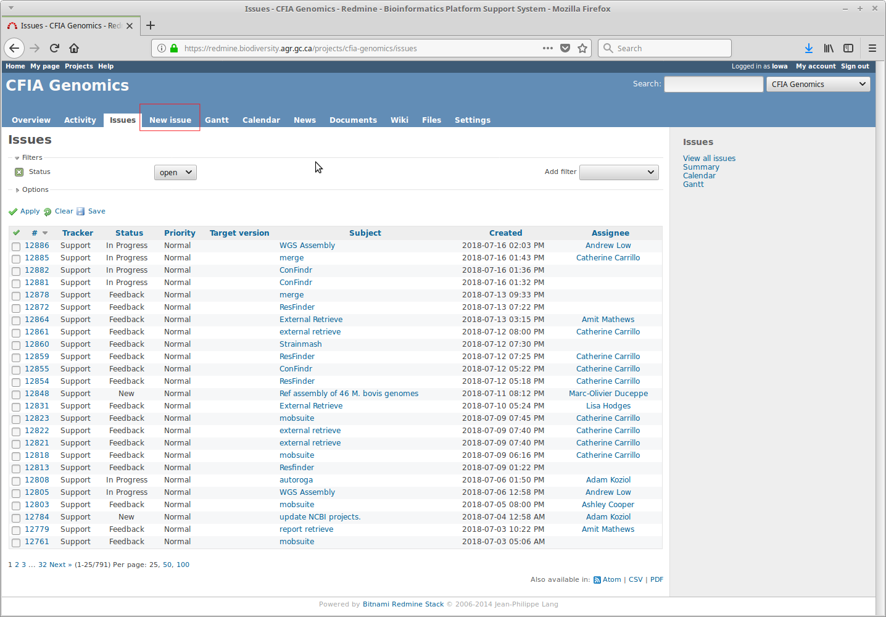
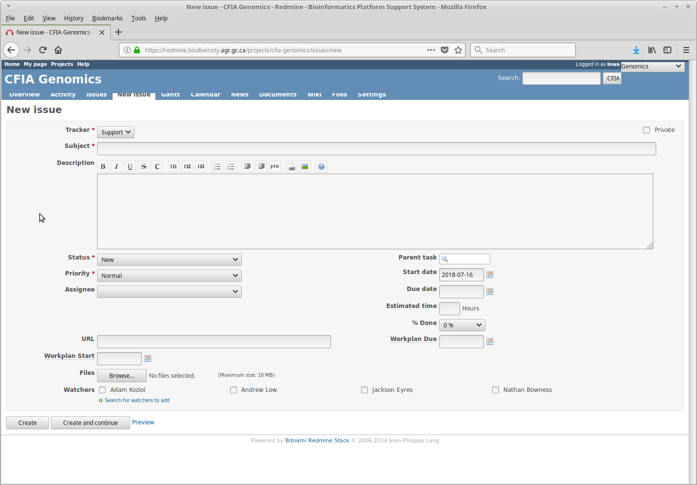

What is Redmine, and what can I use it for?
Redmine is a system for project management and issue tracking that OLC has configured to automate a number of bioinformatics tasks. With Redmine, you can retrieve genomic data (either raw reads or draft assemblies) that is stored at OLC to perform your own analysis locally, look for antibiotic resistance genes or find plasmids in assemblies, create phylogenetic trees, compare strains against RefSeq, and more.
If a tool you need is not currently available, we are generally able to add tools on request.
Accessing Redmine
To access Redmine, go to https://redmine.biodiversity.agr.gc.ca (note that you
must be on the CFIA/Agriculture Canada network). Once there, login with your corporate username and password. If this is
your first time using Redmine, you will need to be added to the CFIA Genomics project. To get access, send an email
to andrew.low@canada.ca, with adam.koziol@canada.ca CC'd and say you need access to the OLC Genomics project. Once you have been added to the project,
head to the project page. This is where you will
be able to create requests.
Changing Email Settings
By default, Redmine likes to send you emails about literally every issue that anybody reports, which can lead to
receiving far more emails than anybody has ever wanted to receive. To change this, click on the My Account button (found
in the top right corner when logged in to Redmine) and change the dropdown for email notifications from For any event
on all my projects to something else - I recommend Only for things I watch or I'm involved in. Once that's done, hit
the Save button on the bottom left of the screen to make sure Redmine remembers your email preferences.
Creating Issues
Everything in Redmine is done by creating Issues - these are requests for an analysis to be done.
To create a new issue, click on the New Issue button, as shown in the below screenshot.
Click to see screenshot

The page for new issues can be seen in the next screenshot. To have your analyses done, specific keywords are put in the
Subject header, with any necessary details put in the Description section. Details on what exactly needs to be put
into each section are under the Data and Analysis tabs for specific tools. Once an issue has been filled out, click
on the Create button. Once that's done you can sit back and relax - you'll receive emails when your request has been
submitted to our compute cluster (which should happen within a minute or two from the time you submitted your issue),
and another once your job has completed (which, depending on the request, can be anywhere from a few minutes to a few
hours).
Click to see screenshot
